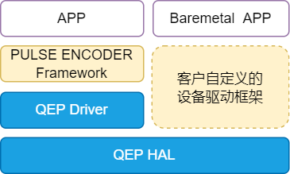

设计说明
15 Jan 2024
Read time: 4 minute(s)
源码说明
源代码位于 bsp/artinchip/：
-
bsp/artinchip/drv/qep/drv_qep.c，QEP Driver 层实现
-
bsp/artinchip/hal/pwmcs/hal_qep.c，PWMCS QEP 模块的 HAL 层实现
-
bsp/artinchip/include/hal/hal_qep.h，PWMCS QEP 模块的 HAL 层接口头文件
模块架构
QEP 驱动 Driver 层采用 RT-Thread 的 PULSE ENCODER 设备驱动框架，如果只使用 HAL 层也可以支持 Baremetal
方式的应用场景。
图 1. QEP 驱动的软件架构图

关键流程设计
初始化流程
QEP 驱动的初始化接口通过 INIT_DEVICE_EXPORT(drv_qep_init) 完成，主要是通过调用 PULSE
ENCODER 子系统的接口 rt_device_pulse_encoder_register() 注册一个 QEP
设备。
QEP 控制器的配置过程，主要步骤有：
-
初始化 PWMCS 模块的 clk
-
使能 QEP 指定通道的 clk
-
设置 QEP 工作模式
-
使能 QEP 的中断
-
启动 QEP 计数
数据结构设计
-
struct aic_qep_arg属于 HAL 层接口，记录每一个 QEP 通道的信息：
struct aic_qep_arg { u16 available; u16 id; }; -
struct aic_qep属于 Driver 层接口，记录一个 QEP 设备的配置信息：
struct aic_qep { struct rt_pulse_encoder_device rtdev; struct aic_qep_data *data; };
Driver 层接口设计
以下接口是 PULSE ENCODER 设备驱动框架的标准接口。
struct rt_pulse_encoder_ops
{
rt_err_t (*init)(struct rt_pulse_encoder_device *pulse_encoder);
rt_int32_t (*get_count)(struct rt_pulse_encoder_device *pulse_encoder);
rt_err_t (*clear_count)(struct rt_pulse_encoder_device *pulse_encoder);
rt_err_t (*control)(struct rt_pulse_encoder_device *pulse_encoder, rt_uint32_t cmd, void *args);
};| 函数原型 | static rt_err_t aic_qep_init(struct rt_pulse_encoder_device *qep) |
|---|---|
| 功能说明 | 初始化配置一路 QEP |
| 参数定义 |
qep - 指向 rt_pulse_encoder_device 设备的指针
|
| 返回值 | 0，成功；<0，失败 |
| 注意事项 | - |
| 函数原型 | static rt_int32_t aic_qep_get_count(struct rt_pulse_encoder_device *qep) |
|---|---|
| 功能说明 | 获取 QEP 计数 |
| 参数定义 |
qep - 指向 rt_pulse_encoder_device 设备的指针
|
| 返回值 | 0，成功；<0，失败 |
| 注意事项 | 暂不支持 |
| 函数原型 | static rt_err_t aic_qep_clear_count(struct rt_pulse_encoder_device *qep) |
|---|---|
| 功能说明 | 清除 QEP 计数 |
| 参数定义 |
qep - 指向 rt_pulse_encoder_device 设备的指针
|
| 返回值 | 0，成功；<0，失败 |
| 注意事项 | 暂不支持 |
| 函数原型 | static rt_err_t aic_qep_control(struct rt_pulse_encoder_device *qep, rt_uint32_t cmd, void *args) |
|---|---|
| 功能说明 | QEP 模块控制接口 |
| 参数定义 |
qep - 指向 rt_pulse_encoder_device 设备的指针
cmd - 控制 QEP 模块的命令
|
| 返回值 | 0，成功；<0，失败 |
| 注意事项 | - |
HAL 层接口设计
HAL 层的函数接口声明存放在 hal_qep.h
中，主要接口有：
u32 hal_qep_int_stat(u32 ch); void hal_qep_clr_int(u32 ch, u32 stat); void hal_qep_set_cnt_ep(u32 i, u32 cnt); void hal_qep_set_cnt_cmp(u32 i, u32 cnt); void hal_qep_config(u32 ch); void hal_qep_int_enable(u32 ch, u32 enable); void hal_qep_enable(u32 ch, u32 enable); int hal_qep_init(void); int hal_qep_deinit(void);
Demo
本 Demo 是 test_qep
的部分源码（bsp/examples/test-qep/test_qep.c）：
struct rt_device_pwm *pwm_dev = RT_NULL;
rt_device_t qep_dev = RT_NULL;
rt_uint32_t pwm_ch;
/* callback function */
static rt_err_t qep_cb(rt_device_t dev, void *buffer)
{
#ifdef ULOG_USING_ISR_LOG
rt_uint32_t *temp = (rt_uint32_t *)buffer;
rt_kprintf("qep %d callback\n", temp[0]);
#endif
rt_pwm_disable(pwm_dev, pwm_ch);
rt_device_close(qep_dev);
return RT_EOK;
}
int test_qep(int argc, char **argv)
{
char device_name[8] = {"qep"};
rt_uint32_t pulse_count;
rt_uint32_t period_ns, duty_ns;
int ret;
if (argc < 6) {
rt_kprintf("usage:test_qep <qep_channel> <pwm_channel> <period_ns> <duty_ns> <pulse_count>\n");
rt_kprintf("example: test_qep 1 3 10000 5000 10\n");
return -RT_ERROR;
}
strcat(device_name, argv[1]);
/* qep configuration */
qep_dev = rt_device_find(device_name);
if (qep_dev == NULL) {
rt_kprintf("can't find %s device!\n", device_name);
return -RT_ERROR;
}
//set the qep callback function
rt_device_set_tx_complete(qep_dev, qep_cb);
ret = rt_device_open(qep_dev, RT_DEVICE_OFLAG_RDWR);
if (ret != RT_EOK) {
rt_kprintf("Failed to open %s device!\n", device_name);
return ret;
}
//set the pulse count
pulse_count = atoi(argv[5]);
ret = rt_device_control(qep_dev, PULSE_ENCODER_CMD_SET_COUNT, &pulse_count);
if (ret != RT_EOK) {
rt_kprintf("Failed to set the pulse count of %s device!\n", device_name);
return ret;
}
rt_thread_mdelay(10);
/* pwm configuration */
pwm_dev = (struct rt_device_pwm *)rt_device_find("pwm");
if (pwm_dev == NULL) {
rt_kprintf("can't find pwm device!\n");
return -RT_ERROR;
}
pwm_ch = atoi(argv[2]);
period_ns = atoi(argv[3]);
duty_ns = atoi(argv[4]);
rt_pwm_set(pwm_dev, pwm_ch, period_ns, duty_ns);
rt_pwm_enable(pwm_dev, pwm_ch);
return RT_EOK;
}
MSH_CMD_EXPORT_ALIAS(test_qep, test_qep, Test the qep);